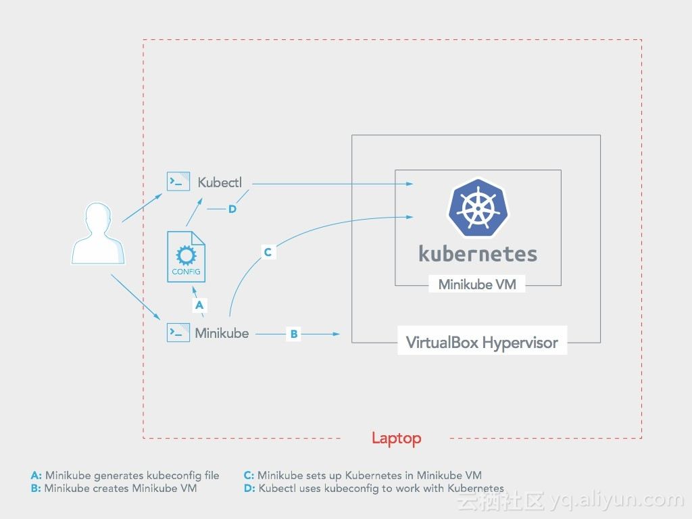

使用minikube搭建单节点K8S集群
背景
对于微服务，K8S是必须要掌握的。但是仅仅依赖于文档还不够，理论与实践相结合才是最完美的。
实现方式
- 
- 如图：
- minikube安装的K8S集群是以VirtualBox为依托，使用Virtual Box安装一个虚拟机vmA，将K8S安装在虚拟机vmA里面。因此，在访问K8S应用的时候应该使用vmA(使用minikube ip获取)的IP来访问。
- 用户在命令行通过Kubectl和Minikube来操作K8S集群。
前置条件
本次搭建主要是在Vmware下的Centos7.8虚拟机上搭建的。因此前置条件有:
- 下载并安装[VMware-workstation-full-14.0.0-6661328.exe],安装包或者密钥生成器可以找@汪维
- 下载Centos7.8(CentOS Linux release 7.8.2003 (Core))的镜像，并创建虚拟机。这里虚拟机的创建不做讲解。若想跳过该步骤，可以找@汪维。虚拟机具体的配置：
- 2CPU
- 4G内存
- 20G硬盘
- 启动虚拟机下的CPU虚拟化(选中虚拟化Intel VT-x/EPT 或AMD-V/RVI(V))，如下图
- 给虚拟机配置固定IP.按照如下截图进行修改，修改完成之后，使用systemctl restart network重新启动网络
- 其中，ip以及网关的设置需要根据本地虚拟机网络来配置

- 使用yum update更新软件包
- 安装vim

安装步骤
Step1.虚拟机安装VirtualBox-5.1
001.新增文件virtualbox.repo
-
在/etc/yum.repos.d目录下新建virtualbox.repo文件，并写入如下内容
[virtualbox]
name=Oracle Linux / RHEL / CentOS-$releasever / basearch−VirtualBoxbaseurl=http://download.virtualbox.org/virtualbox/rpm/el/releasever/$basearch
enabled=1
gpgcheck=1
repo_gpgcheck=1
gpgkey=https://www.virtualbox.org/download/oracle_vbox.asc -
如下图

002. 更新yum缓存
- 先执行: yum clean all
- 再执行: yum makecache
003. 安装virtualbox
- 执行命令: yum install VirtualBox-5.1
004. 配置VirtualBox
- 执行命令: sudo /sbin/vboxconfig
- 按照提示安装对应软件包

- 因此，按照提示，需要依次执行命令:
- yum install gcc make
- yum install kernel-devel-3.10.0-957.el7.x86_64
- yum install kernel-devel
- 第二步执行完成之后，再次执行sudo /sbin/vboxconfig命令，检测依赖是否安装成功
005.重启虚拟机
- 执行命令: reboot
Step2.虚拟机安装Docker
001.安装Docker
- yum remove docker-latest-logrotate docker-logrotate docker-selinux dockdocker-engine
- yum install -y yum-utils device-mapper-persistent-data lvm2
002.使用阿里云安装源
- yum-config-manager --add-repo http://mirrors.aliyun.com/docker-ce/linux/centos/docker-ce.repo
- rpm --import http://mirrors.aliyun.com/docker-ce/linux/centos/gpg
- yum makecache fast
- yum -y install docker-ce
003.完成安装并启动Docker
- systemctl start docker && systemctl status docker && systemctl enable docker
004. 新建用户组，新建用户，并将用户添加到用户组中
- 新建用户组：groupadd docker
- 新建用户: useradd wei
- 给新用户设置密码: passwd wei
- 将新用户添加到docker用户组中: usermod -aG docker wei
- 重启docker服务: systemctl restart docker
05.给新建用户赋予root权限
- 修改文件/etc/sudoers,如下

06.切换用户，之后操作在新建的用户下执行
- 使用命令 su - wei 来切换用户
07. 配置dockers镜像源
修改文件 /etc/docker/daemon.json
{
"registry-mirrors": ["https://17o3zxc0.mirror.aliyuncs.com"]
}
修改之后，需要重启Docker
systemctl restart docker
Step3.虚拟机安装Kubectl
001. 下载kubectl
请注意版本号,例如 Linux 64位，则应该选择linux-amd64版本的
- 使用命令: wget https://dl.k8s.io/v1.18.9/kubernetes-client-linux-amd64.tar.gz

02. 解压缩，放入/usr/local/bin目录中

Step4.虚拟机安装minikube
01. 下载minikube
同kubectl，需要注意版本号
- 点击进入下载页面https://github.com/kubernetes/minikube/releases/tag/v1.12.3
- 使用命令: wget https://github.com/kubernetes/minikube/releases/download/v1.12.3/minikube-linux-amd64
- 请注意，这里下载的是v1.12.3版本的minikube，对应的K8S版本是v1.18.3

02. 重命名
- mv minikube-linux-amd64 minikube
03. 赋予可执行权限
- sudo chmod a+x minikube
04. 放入到/usr/local/bin目录中
- sudo cp minikube /usr/local/bin/
Step5.虚拟机启动K8S
001.使用如下命令创建K8S集群
- minikube start --vm-driver=virtualbox --registry-mirror=https://17o3zxc0.mirror.aliyuncs.com
- --vm-driver:指定驱动，这里使用Virtual Box来实现
- --registry-mirror docker registry 的镜像源，集群安装后拉取镜像加速用，可以使用其它加速器地址

002. 判断是否创建成功
- 使用命令: minikube status

- 如图，即创建成功
Step6.使用K8S集群
001. 创建nginx-deployment.yml文件。
- 内容如下
apiVersion: apps/v1 kind: Deployment metadata: name: nginx-deployment spec: replicas: 1 selector: matchLabels: app: nginx template: metadata: labels: app: nginx spec: containers: - name: nginx image: nginx ports: - containerPort: 80
002. 创建nginx-service.yml文件。
- 内容如下
kind: Service apiVersion: v1 metadata: name: nginx-service spec: selector: app: nginx ports: - port: 80 targetPort: 80
003. 创建nginx-ingress.yml文件。
- 内容如下
apiVersion: extensions/v1beta1 kind: Ingress metadata: name: nginx-ingress annotations: kubernetes.io/ingress.class: "nginx" spec: rules: - host: nginx.bosswang.link http: paths: - path: / backend: serviceName: nginx-service servicePort: 80
004. 应用yml文件，创建pod，service，ingress
- 使用命令:kubectl create -f nginx-xxx.yml

005. minikube 启动ingress
- 使用命令：minikube addons enable ingress

- 若命令执行失败，先执行minikube dashboard命令
- 成功效果如下：

006. 本地配置DNS，创建虚拟域名
- 修改/etc/hosts文件，添加如下内容

007. 访问
- 目前在该K8S集群中创建的Pod，Service，Ingress，因此可以通过外网访问到集群内部(通过Ingress，当然也可以直接使用NodePort形式访问服务)的服务。如下
- 使用命令： curl http://nginx.bosswang.link,输入如下:
- 测试一下：修改nginx的index页面

- 再次访问：

- 使用命令： curl http://nginx.bosswang.link,输入如下:

总结
- 该文档仅仅是体现如何搭建一个单节点的K8S集群，更多更深入的，更有趣的需要你来探索。